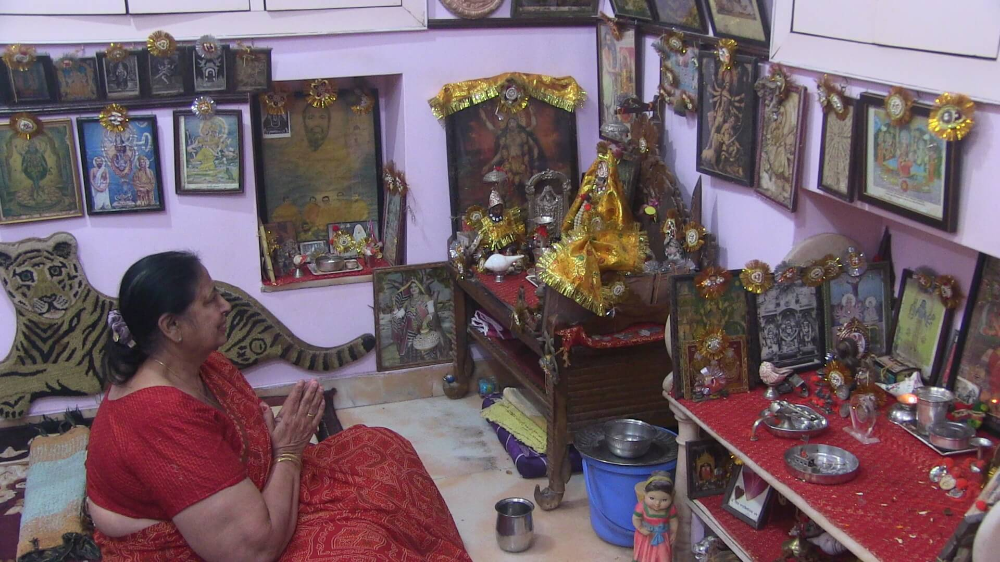
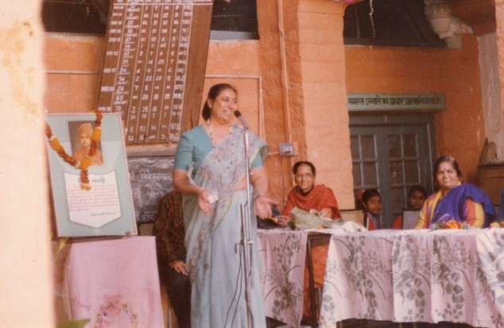
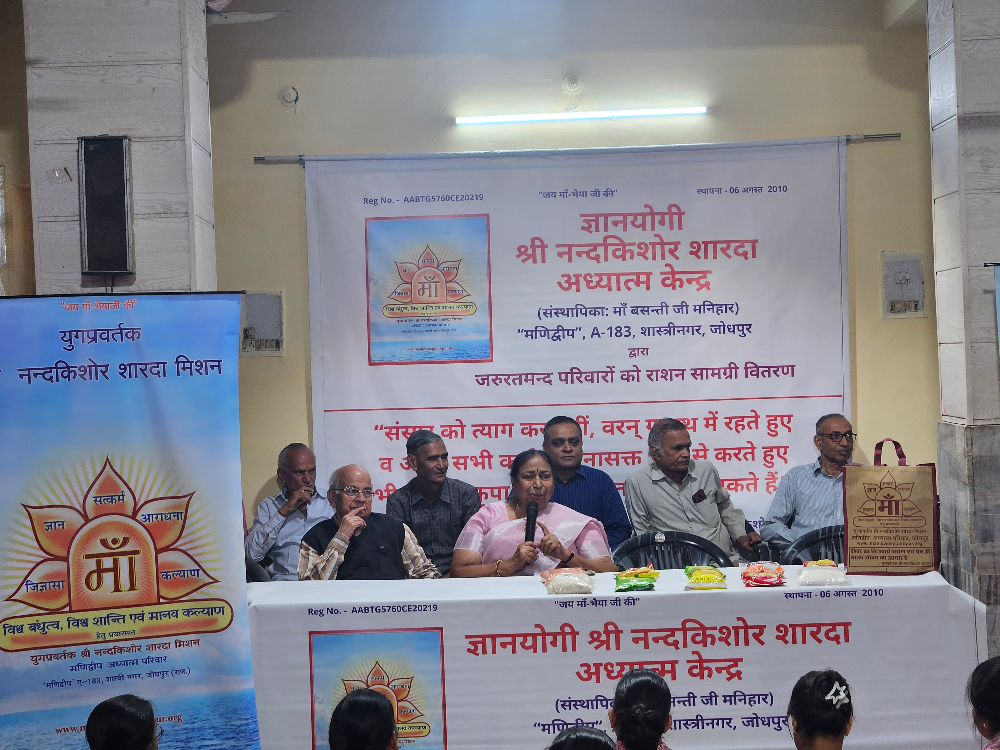

Lovingly known as Madhu Maa · President since 2021
Rooted in the wisdom of Bhaiyaji and the guidance of Maa Basanti, Madhu Maa sustains the Mission’s spiritual methodology while leading its educational, welfare and self-reliance initiatives with clarity and compassion.
Born1951 Sirsa
Divine meetingMet Maa Basanti on 9 December 1970
Present responsibilityPresident of the Trust since 2021
The Grace of an Unexpected Meeting
Long before she led the Mission, a nineteen-year-old entered a hospital and walked into a different life
Madhu Maa’s story does not begin with office or authority. It begins with concern for her mother, a chance encounter in a hospital corridor, and the quiet recognition that some meetings divide life into a before and an after.
9 December 1970
A meeting that seemed accidental
Madhubala Advani was only nineteen and attending to her mother in hospital when she met Maa Basanti Manihar. Within that unlikely setting, Maa Basanti introduced her to Shri Nandkishore Sharda—Bhaiyaji.
There was no public ceremony, no promise of future leadership and no way for her to know where the meeting would lead. Yet the clarity and warmth she encountered drew her back. A hospital visit born of familial care became the doorway to a spiritual family.
A life quietly redirected
What first appeared to be coincidence became companionship, Sadhna and more than five decades of service.
The young student and the deeper questions
Psychology studied the mind; spiritual inquiry opened the inner world
From 1971, while pursuing her M.A. in Psychology in Jodhpur, Madhu Maa spent long hours in contemplation and discussion with Bhaiyaji and Maa Basanti. Her questions were not discouraged or answered vaguely. They were met with reason, patience and practices she could verify through experience.
Under Bhaiyaji’s gentle guidance, she undertook demanding disciplines. Maa Basanti led her toward realization of the formless Supreme Absolute. The attraction of an outwardly conventional life gradually loosened as the inner journey gained meaning.

Sadhna remained the unseen centre of every responsibility that followed.
Trust earned in quiet ways
Before she carried the Mission publicly, she learned to serve without being seen
Bhaiyaji entrusted her with transcribing his spiritual work, Wonderful World After Death—a responsibility demanding attention, patience and fidelity to his thought. When the educational Trust began in 1996, she joined not as a distant administrator but as a grassroots worker.
She visited schools with Bhaiyaji, sat with teachers, students and families, explained why values must accompany education, and coordinated the innumerable details that make compassionate service dependable. Leadership was being formed long before it was named.

Among students during the early years of educational outreach.

Compassion in action: Madhu Maa with families during a food-assistance initiative.
The same river, still flowing
Her presidency is visible; its foundation remains deeply personal
Today, Madhu Maa oversees administration, spiritual literature, Sunday classes, educational assistance and lifelong mentorship. She guides work in food support, Yoga, Pranayama, meditation and vocational training for women and girls.
Yet behind those programmes remains the nineteen-year-old who was willing to listen, question and be transformed. The warmth with which she leads is inseparable from the gratitude of having been guided herself.
Madhu Maa today, with the two guiding presences whose spirit she carries forward.
Leadership came in 2021. The preparation for it had begun, quietly, on 9 December 1970.
The Mission Today
Ancient wisdom, actively sustained in the present
01 · Continuity
The original spirit
Bhaiyaji’s principles and Maa Basanti’s stewardship remain the reference point for every decision and initiative.
02 · Belonging
Lifelong support
Students and families receive more than assistance: they gain mentorship, values and the confidence that the Mission stands beside them.
03 · Wholeness
Service in four dimensions
Education, welfare and self-reliance are joined with physical, mental, spiritual and emotional development.